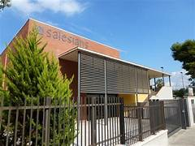

Experiencia
Prácticas FCT en Salesians Sant Vicenç dels Horts
He realizado un total de 383 horas de prácticas FCT en el colegio Salesians Sant Vicenç dels Horts, una institución educativa reconocida por su enfoque técnico y valores educativos. Durante estas prácticas, he podido colaborar con el equipo técnico y docente, aprendiendo el funcionamiento de la infraestructura digital de un centro escolar y participando en tareas de soporte informático.
Trayectoria en el colegio Pare Enric d'Ossó
Estudié desde P3 hasta 4º de la ESO en el colegio Pare Enric d'Ossó, donde adquirí una formación integral y valores fundamentales que me han acompañado en mi desarrollo académico y personal.

Estudios actuales
Actualmente estoy cursando el Ciclo Formativo de Grado Medio de Sistemas Microinformáticos i Xarxes, donde estoy ampliando mis conocimientos en redes, hardware, sistemas operativos y soporte técnico.

Funcions i responsabilitats assumides
- Configuración y mantenimiento de equipos informáticos.
- Resolución de incidencias básicas de software y hardware.
- Apoyo en la gestión de redes locales del centro.
- Instalación y actualización de sistemas operativos y programas educativos.